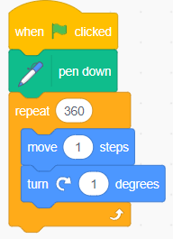

Activity 10: Drawing a circle
Create a circle by taking tiny steps and turning a little after each step. This activity illustrates how to make a circle by taking 1 step and turning 1 degree after each step.
Steps
-
1.
Choose a sprite, for this case, choose a pencil from the sprites list.
-
2.
From the Events block, choose the when green flag clicked block.
-
3.
From the Pen block, choose the pen down block.
-
4.
From the Control block, choose the repeat () block and place 360 in the condition area. This tells the program to repeat 360 times.
-
5.
Inside the body of the repeat () block, add code to make the sprite move 1 step, and turn 1 degree after each step. Observe Figure 14.
-
6.
Start the program by clicking/pressing the green flag. You will observe that, the sprite will make a small step and turn 1 degree until a full circle is drawn.
Code blocks

Note:
-
1.
It’s important to clear any old drawings from the stage before drawing a new shape. Refer to Figure 15(a).
-
2.
A circle has 360 degrees.